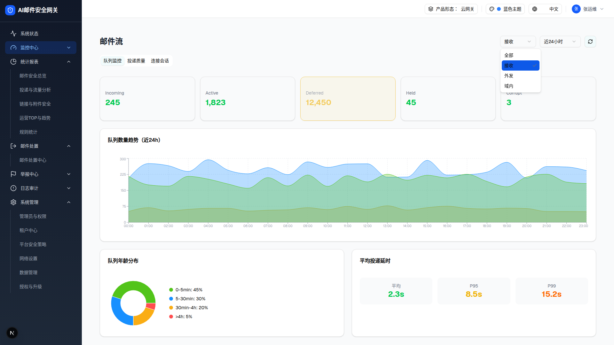
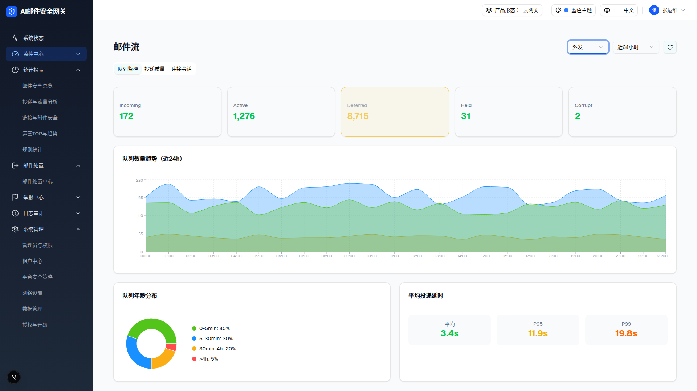

| 所属组件 | 2.1 页面头部（方向 Select） |
| 主文件 | monitor-mailflow/index.html |
| 触发路径 | 层级0 → 点击「接收」Select → 下拉（全部/接收/外发/域内）→ 选「外发」→ 7 组 useMemo 数据重算 |

点开方向 Select（全部 / 接收 / 外发 / 域内），5 张队列卡的数值即时按方向联动重算（提取自运行中的 demo，4 值已逐一在浏览器实测核对）。仅队列卡数值联动是本层主题；投递延时 / 平均响应 / 连接 KPI 各有独立按方向取值逻辑，不在本预览内演示（见下方对照表说明）。deferred 恒为 warning 态（黄底黄边 + 脉冲）。

| 数据组 | 全部（×1.8） | 接收（×1.0） | 外发（×0.7） | 域内（×0.4） |
|---|---|---|---|---|
| incoming | 441 | 245 | 172 | 98 |
| active | 3,281 | 1,823 | 1,276 | 729 |
| deferred（warning 脉冲） | 22,410 | 12,450 | 8,715 | 4,980 |
| held | 81 | 45 | 31 | 18 |
| corrupt | 5 | 3 | 2 | 1 |
| 平均投递延时 avg/p95/p99 | 1.8s / 5.9s / 9.1s | 2.3s / 8.5s / 15.2s | 3.4s / 11.9s / 19.8s | 1.8s / 5.9s / 9.1s |
| 连接上游/下游（KPI） | 5,700 / 5,475 | 8,500 / 7,900 | 6,200 / 5,730 | 3,800 / 3,650 |
| 平均响应时间 | 280ms | 450ms | 1,200ms（黄） | 280ms |
注：仅队列卡 / 队列趋势 / 退信尝试数按 directionMultiplier（1.8/1.0/0.7/0.4）联动。投递延时、平均响应时间、连接上游/下游 KPI 各有独立的按方向取值逻辑，不套用 ×1.8：延时/响应用系数 receive×1、send-outbound×(1.5/1.4/1.3)、其余（含「全部」「域内」）×(0.8/0.7/0.6)，故「全部」列延时=1.8/5.9/9.1、响应=280ms（与域内同）；连接 KPI 基数 receive=8500/7900、send-outbound=6200/5730、其余=3800/3650，仅「全部」再×1.5 得 5,700/5,475（浏览器实测）。
| 比对项 | 接收态 | 外发态 | 是否变化 |
|---|---|---|---|
| 卡片数 | 8 | 8 | 否（结构不变） |
| 队列卡数值 | 245/1,823/12,450/45/3 | 172/1,276/8,715/31/2 | 是（×0.7 联动） |
| 图表数 | 2 | 2 | 否（数值重绘） |
| Select trigger 文案 | 接收 | 外发 | 是 |